Research projects & student demos
Expected Parrot cannot currently supervise student projects. We think the best approach is for students to explore independently, build something useful, and see what they learn. We are happy to provide credit grants and help boost the work, and we can respond to feature requests that come out of projects. Anyone can also open an issue on a package repository. These packages are in different states of completeness, but each is intended as a tool for agents to help solve a problem. The project and demo ideas below are starting points; students may find other worthwhile directions.
| Package | What it does | Publishable research question | Feasible student demo |
|---|---|---|---|
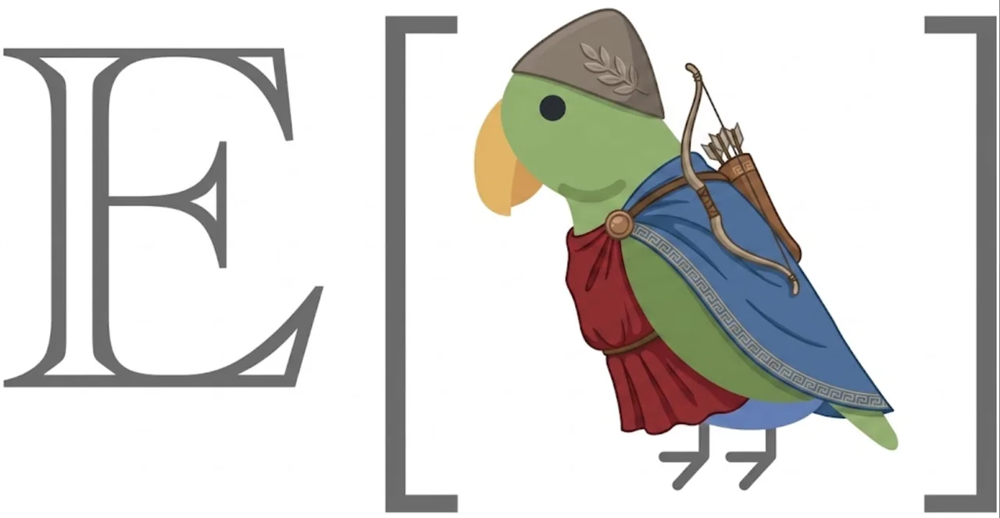 Epiq | Epiq is a local-first epistemic database for evidence-backed research. It stores entities, typed questions, source excerpts, and claims in SQLite, preserving the provenance and history behind each answer. Its Python API, CLI, and spreadsheet interface let researchers and application packages build auditable datasets and export them as tables, HTML, or Excel. | Does explicit claim provenance and revision history improve the accuracy and reproducibility of evidence-based answers? | Build a small sourced dataset on a changing topic; have independent reviewers answer questions with and without provenance records. |
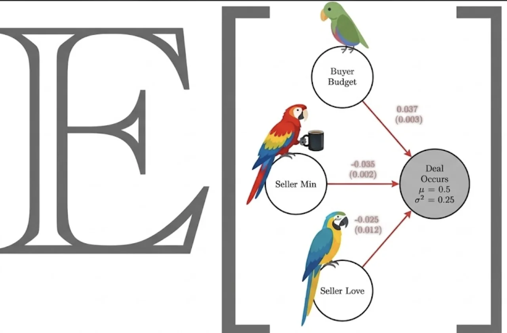 AISS | AISS is a Python package for designing, running, and analyzing AI social science studies with EDSL. It provides serializable research designs, independently versioned analysis plans, causal and factorial analysis, and deterministic scientific reports. Its simulation DSL defines participant roles, private information, treatments, interaction rules, and measurements, with resumable execution and durable attempt tracking. | Which interaction rules and information treatments cause simulated bargaining outcomes to change, and do those effects resemble human experiments? | Reproduce a classic bargaining game, vary one treatment, and compare model estimates with a published human result. |
| Conversation | Conversation is an EDSL-based package for simulating structured, multi-agent conversations. It manages turn-taking, parallel conversation runs, retry behavior, and accumulated results so researchers can study interactions among simulated participants rather than isolated survey responses. | How do turn-taking rules, group composition, and model diversity affect consensus, information sharing, and minority influence? | Run controlled small-group discussions with one varied factor and code transcripts using a fixed rubric. |
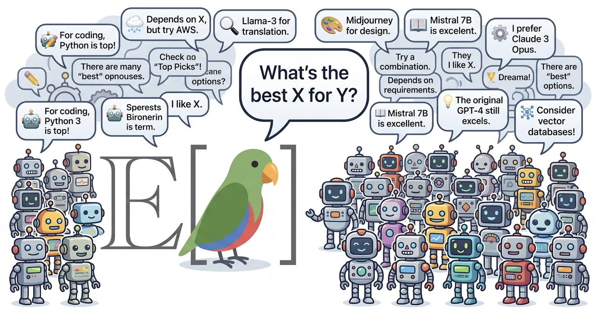 Aivis | Aivis is an agent-facing CLI for measuring how brands and competitors appear in AI-generated answers. It administers a reusable prompt library across models, extracts tracked-brand observations with an EDSL judge, and stores deterministic time-series records for share of voice, mention rate, recommendations, sentiment, and citation influence. | How stable are AI-generated brand recommendations across prompts, models, and time, and which prompt properties drive visibility? | Track a category of local or open-source products weekly; audit judge agreement against blinded human coders. |
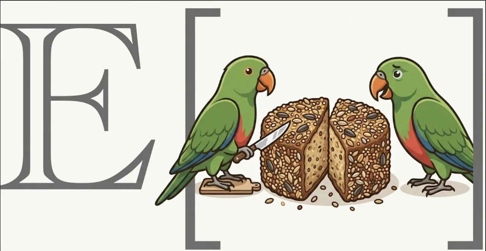 Ariel | Ariel is an agent-first fair-division package for rent, indivisible goods, bivalued chores, project credit, and shared fares. It combines local mathematical solvers and explicit verification with EDSL participation by humans or simulated subjects, preserves original evidence, and keeps post-allocation reactions separate from submitted inputs. Its state-aware `next` command guides agents through problem setup and execution. | Which fair-division procedures produce allocations that participants regard as fair, strategy-proof, and easy to understand? | Compare two allocation rules in a simulated or human classroom allocation exercise; collect envy and satisfaction ratings. |
| Bewley | Bewley is a local-first qualitative-coding CLI for interview transcripts and other text corpora. It maintains an auditable history of codebooks, span annotations, and memos, supports AI-assisted open coding through EDSL, and exports evidence tables, visual explorers, theory diagrams, and narrative summaries. | Under what conditions do AI-assisted qualitative coding workflows improve coding speed without reducing interpretive validity? | Have human coders and an AI-assisted workflow code the same interview excerpts; compare agreement, omissions, and time. |
| Bower | Bower is a CLI for hypothesis-driven stakeholder studies. It records firm context and sourced information about people, captures the commissioning brief, and designs customized interviews to test hypotheses. Human surveys and synthetic personas run through EDSL; Bower registers the returned results, preserves provenance, and links findings to evidence and follow-up work. | Do hypothesis-led stakeholder interviews surface decision-relevant evidence that generic interviews miss? | Compare tailored and generic interview guides on a small stakeholder case; assess evidence coverage with blinded reviewers. |
| Burr | Burr is an agent-friendly CLI for driver-based company modeling. It separates business formulas, reported facts, and sourced assumptions; tests scenarios and records findings in an append-only experiment journal. Its guide and next commands lead agents through validation, belief testing, and exports to interactive dashboards, charts, CSV, and verified Excel workbooks. | How sensitive are driver-based company forecasts to sourced assumptions and formula choices? | Recreate a historical company forecast, perturb assumptions, and compare forecast errors with a simple trend baseline. |
| Dewey | Dewey is an agent-facing CLI for auditable literature reviews. It manages papers, rendered text, short summaries, discovery and citation provenance, staged screening decisions, source relationships, searchable project state, interactive review explorers, and portable full-project archives. | Does a provenance-aware literature review workflow improve screening consistency and retrieval of relevant studies? | Give reviewers the same search corpus; compare inclusion decisions, citation traceability, and time with a standard spreadsheet workflow. |
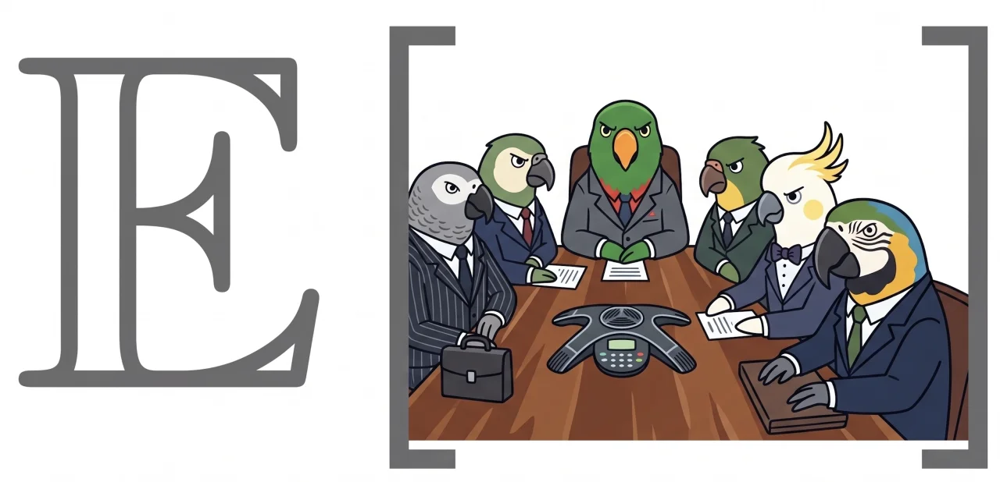 Earnings | Earnings is an agent-first CLI for predicting and preparing earnings calls. It freezes dated company evidence and script variants, builds EDSL studies for analyst, investor, media, and ecosystem panels, and turns validated results into management preparation reports and paired script comparisons. Its guide and next commands track study revisions and artifacts; backtests score predefined topic occurrence and analyst attendance while keeping simulated reactions distinct from observed outcomes. | Can simulated analyst panels anticipate the topics and questions that occur on real earnings calls? | Backtest dated call transcripts using only pre-call information; compare topic recall and question coverage against simple baselines. |
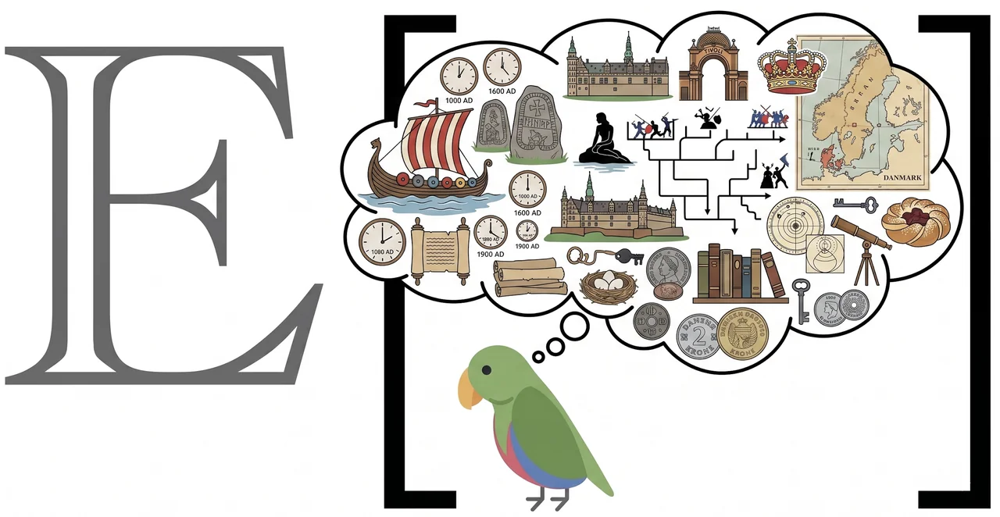 Flyvbjerg | Flyvbjerg is an agent-facing CLI for reference-class forecasting and outside-view analysis. It preserves comparable cases, sources, events, claims, metrics, missingness, dependence clusters, and frozen analyses in an auditable evidence ledger, turning accepted observations into defensible reference-class distributions. | Does reference-class forecasting reduce planning errors relative to inside-view estimates across project types? | Assemble a small historical project dataset and compare forecasts with and without a matched reference class. |
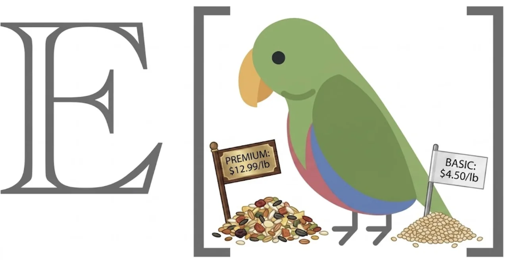 Green | Green is an agent-first toolkit for conjoint analysis and discrete-choice experiments. It helps design choice tasks, generate EDSL fieldwork, estimate preference models, and produce part-worths, willingness-to-pay estimates, market-share simulations, and sensitivity analyses. | How well do simulated choice experiments recover human preferences and willingness to pay under different task designs? | Use a public conjoint dataset, reproduce estimates, then test whether a synthetic panel recovers held-out choices. |
| Golden | Golden is an agent-first CLI for evidence-backed consumer decisions. It combines structured preference interviews, explicit constraints, sourced product research, sensitivity analysis, and an interactive utility-versus-price explorer to help consumers make transparent, auditable choices. | Do explicit constraints and evidence-backed product comparisons produce choices that better match consumers' stated priorities? | Compare a transparent utility workflow with a simple price-and-rating ranking on a small product category. |
| Helmer | Helmer is an agent-first CLI for Delphi expert elicitation. It collects numerical estimates and ratings across repeated rounds, gives each expert anonymous group feedback and their own previous answers, and reports consensus, stability, attrition, and remaining disagreement. It preserves study history, exchanges native EDSL instruments and Results, and supports small workflow pilots with separate participant roles. | When does anonymous iterative feedback improve expert forecast accuracy, and when does it merely increase consensus? | Run a small Delphi exercise on resolvable questions; compare round-wise accuracy and dispersion to a no-feedback control or baseline. |
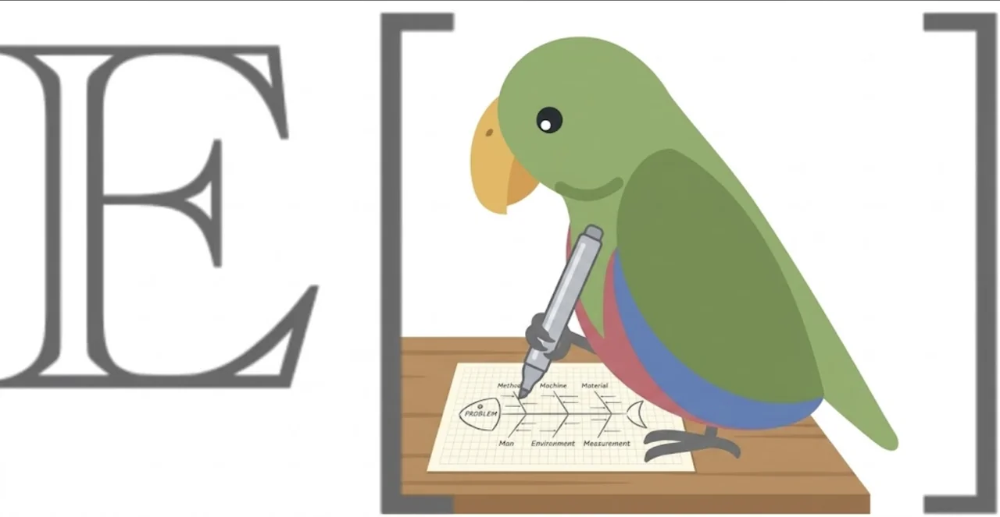 Ishikawa | Ishikawa is an agent-friendly Python CLI for cause-and-effect analysis and fishbone diagrams. It organizes possible causes into categories and nested why chains, records supporting and contradicting evidence, and tracks investigations and corrective actions. JSON project files, SVG diagrams, and searchable HTML reports preserve hypotheses and assessments without treating them as proven root causes. | Do structured cause maps help teams identify root causes more accurately than unstructured brainstorming? | Give teams a known incident case, randomize the analysis format, and score identified causes against a documented postmortem. |
| Kahn | Kahn is a two-axis strategic scenario-planning CLI. It turns environmental forces and critical uncertainties into a scenario matrix, develops narratives for the resulting futures, and evaluates strategic options across them. | Do scenario-planning exercises improve the robustness of strategic choices under uncertainty? | Compare plans made with a scenario matrix against a single forecast, then score both against held-out historical shocks. |
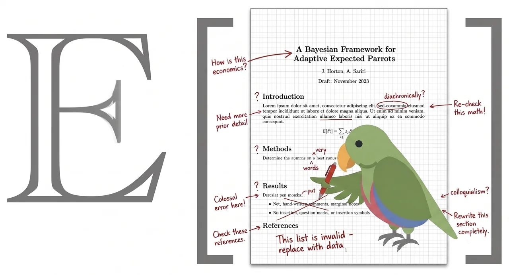 Katz | Katz is a version-aware ledger for reviewing academic manuscripts. It anchors human and model-generated findings to manuscript sections and Git versions, tracks investigation and resolution history, and produces review reports from the resulting issue record. | Can version-linked review ledgers reduce duplicate findings and improve the reproducibility of manuscript peer review? | Have reviewers assess one paper independently using a shared ledger; compare overlap, resolution tracking, and missing evidence. |
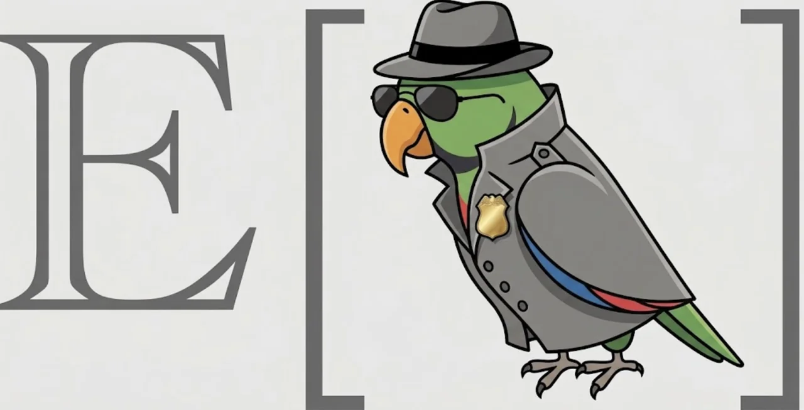 Kean | Kean is an agent-first CLI for evidence-backed event graphs on an ordinary epiq database. It records occurrences, participants, and supported relations, then exposes bitemporal timelines, auditable paths, response delays, unexplained events, and contested claims. Deterministic JSON, DOT, and HTML exports preserve claim and evidence lineage. | Does representing competing causal claims with explicit evidence links improve analyst agreement and revision quality? | Build a small claim-evidence graph for a public controversy and compare structured versus prose-only assessments. |
| Langley | Langley is an agent-first implementation of Richards Heuer's Analysis of Competing Hypotheses method. It compares evidence across hypotheses, records a durable audit trail, runs sensitivity analysis, and generates portable EDSL jobs for AI-assisted analysis. | Does Analysis of Competing Hypotheses reduce confirmation bias compared with narrative evidence review? | Reanalyze a historical case with the ACH matrix and a prose control; blind-score hypothesis discrimination and auditability. |
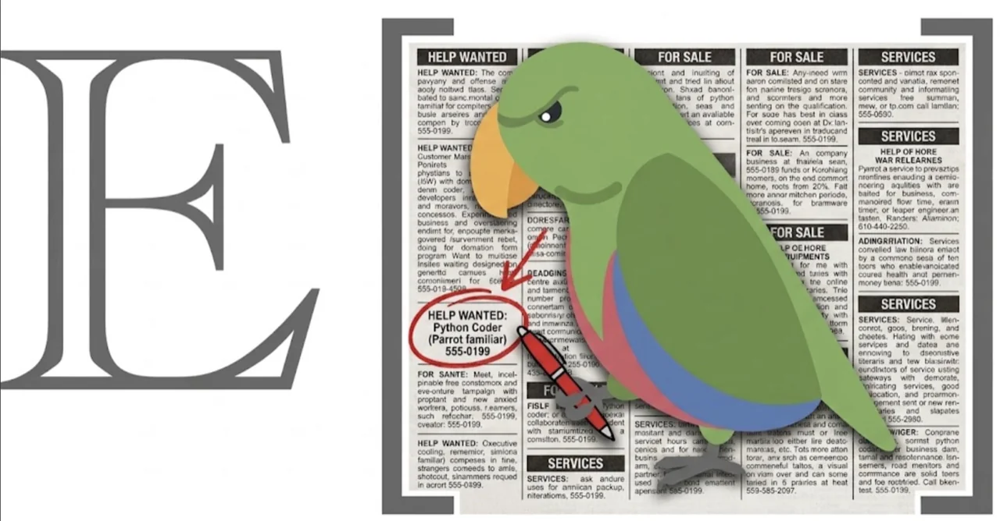 McCall | McCall is an agent-facing CLI for pretesting and refining job posts with EDSL candidate simulations. It preserves role requirements, post variants, persona provenance, portable Jobs and Results, and controlled comparisons so hiring teams can see how different candidate types interpret a post before publishing it. | Which job-post features change qualified applicants' understanding and intent to apply, and do simulated candidates predict those changes? | A/B test two ethically reviewed job-post variants with human readers and compare simulated candidate responses. |
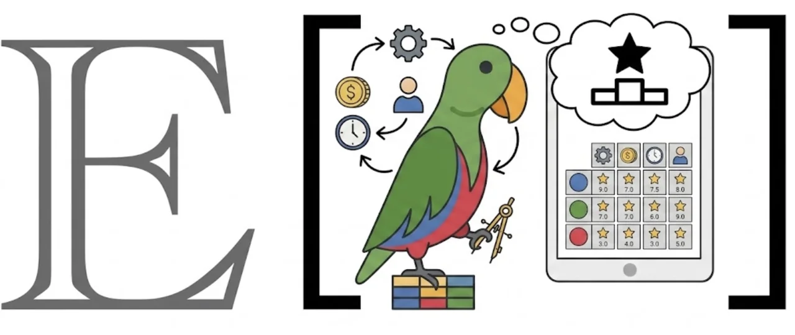 MCDA | MCDA is an agent-first, JSON-enveloped CLI for multi-criteria decision analysis. It records participants, alternatives, criteria, weights, thresholds, and performance assessments, then compares options using transparent weighted-sum or ELECTRE III analysis while preserving auditable project state. | How sensitive are multi-criteria rankings to weight elicitation method and aggregation rule? | Rank a set of campus or public-policy options using participant weights; compare weighted-sum and outranking results. |
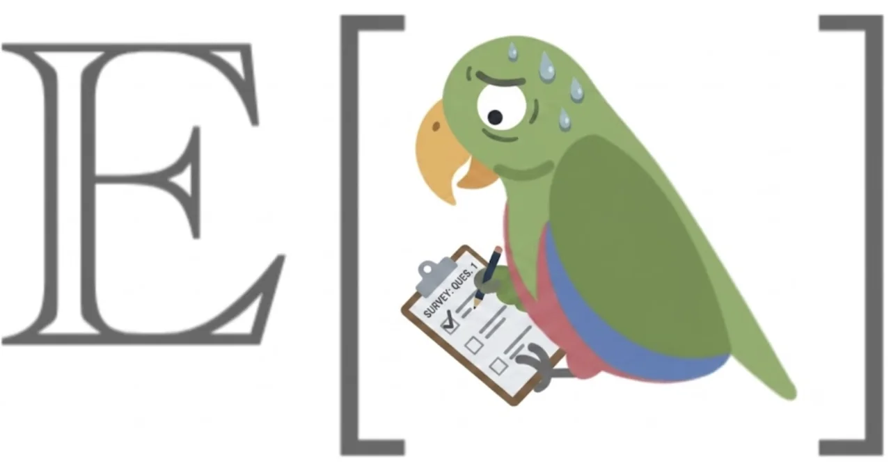 Messick | Messick is an agent-first package for pretesting, revising, and validating EDSL survey instruments. It tracks intended constructs and uses, preserves immutable revisions and evidence provenance, and keeps simulation findings distinct from evidence about human respondents. | Which survey pretesting signals best predict item failure or nonresponse among human respondents? | Pretest a short instrument with simulated agents, then field it to a small human sample and compare warning accuracy. |
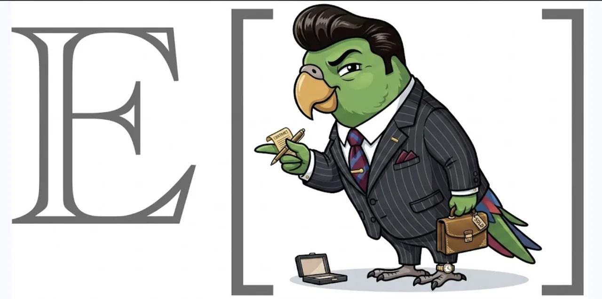 Niles | Niles is a local-first CRM CLI for relationship work. It manages contacts, interaction notes, follow-up tasks, teammates, materials, surveys, human intake, and reviewed model recommendations through a machine-readable interface. | Do structured relationship-management reminders improve follow-up completion or response rates in small research teams? | Pilot a consent-based follow-up log with a student organization; compare completion before and after reminders. |
| Oneheart | Oneheart is a CLI for designing and recording Concordia-backed multi-agent social simulations. It manages study definitions, agents, treatments, measurements, generated pilot code, run records, and outcome exports for research on agent interactions. | How do network structure and behavioral rules affect cooperation and norm emergence in multi-agent simulations? | Run a repeated public-goods or coordination game across network structures; test robustness across seeds and models. |
| Perla | Perla is a local-first CLI for competitive wargaming. It tests strategic decisions through sourced actor dossiers, isolated committed moves, neutral adjudication, and player rebuttals. It exports EDSL jobs for external execution, preserves an audit trail across rounds, and produces criterion evaluations, registered predictions, JSON/HTML reports, and lookback calibration scores. | How accurately can adversarial, role-separated wargames anticipate strategic moves in historical crises? | Replay a bounded historical decision using dated evidence and score registered predictions against the record. |
| Premortem | Premortem facilitates a structured, Gary Klein-style pre-mortem for a decision, project, launch, or strategy. It elicits failure modes from stakeholder personas, builds and scores a causal graph, develops mitigations and a research agenda, and renders a final report. | Does a structured premortem increase detection of project failure modes and adoption of mitigations? | Randomize student teams to premortem or standard planning; blind-rate risk coverage and mitigation specificity. |
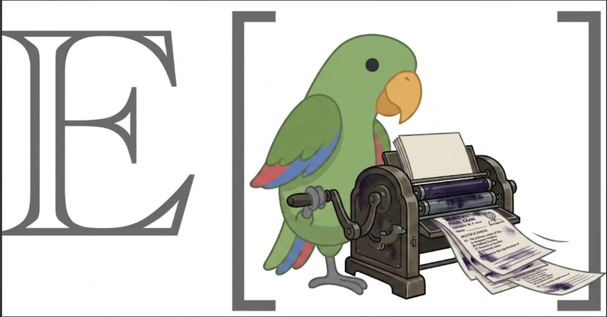 Pruefung | Pruefung is an agent-first CLI for building, checking, deploying, and grading quizzes and exams with EDSL-native questions. It stores inspectable project state, returns structured JSON for agent workflows, and keeps model inference behind an explicit make, run, and ingest boundary. | Can AI-generated assessment items measure the intended learning outcomes as reliably as instructor-written items? | Build equivalent quiz forms, check alignment with a rubric, and compare difficulty and discrimination in a class pilot. |
| Raiffa | Raiffa turns sourced beliefs into auditable decision policies using finite influence diagrams. It compares choices, finds switching thresholds, and values explicitly modeled research, with parameter provenance, frozen analyses, and replayable decision memos. The tutorial works through a synthetic settle-versus-litigate decision, including whether to buy more information. | When is collecting additional information worth its cost in real decisions, and how accurately do decision models identify that threshold? | Model a bounded decision with uncertain outcomes; compare value-of-information recommendations to observed choices or outcomes. |
| Roth | Roth collects preferences on both sides of a market and computes one-to-one stable matches using deferred acceptance. It supports Humanize ranking surveys, organizer-controlled LLM delegation, optional A-versus-B preference benchmarks, frozen inputs, and reports of realized ranks and unmatched participants. | How do matching mechanisms affect realized preferences, stability, and perceived fairness in two-sided allocation? | Compare deferred acceptance variants on a class project or public matching dataset; report ranks and unmatched rates. |
| Spence | Spence is an applicant tracking CLI built on EDSL humanize. It connects job posts, hosted application forms, candidate records, and structured human reviews in one private workspace. It preserves application and review history, tracks hiring stages, and produces candidate reports. The package is a working alpha; live hosted acceptance testing remains outstanding. | Do structured application forms and review rubrics improve consistency and job-relevant assessment in hiring? | Use fictional or consented applications to compare rubric-guided reviews with unstructured review; audit subgroup differences. |
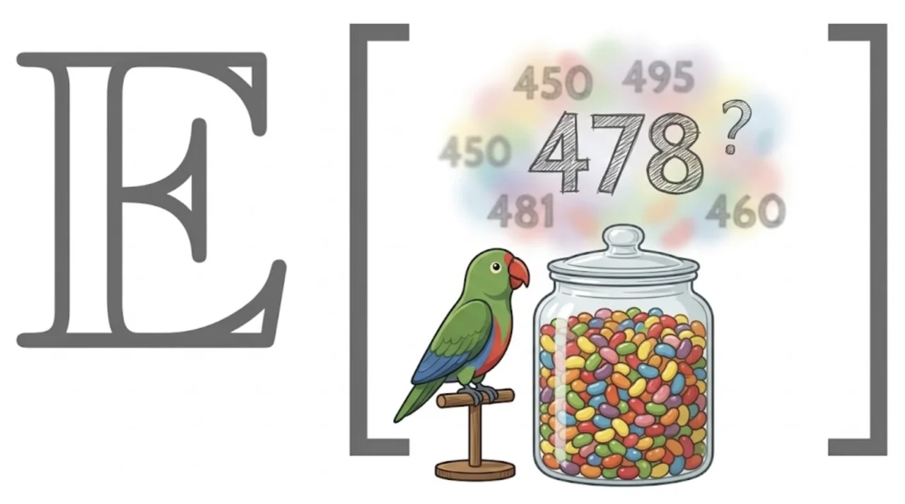 Stanton | Stanton is a local numerical estimation workbench for people and agents. It combines sourced estimates with unit-aware arithmetic, propagates uncertainty, and compares alternative estimation strategies while preserving provenance and revision history. Its agent guide supports research, sensitivity analysis, and issued conclusions that retain scope, dates, limitations, and unresolved evidence gaps. | Which estimation method gives the best calibrated uncertainty intervals for practical numerical questions? | Forecast a set of resolvable quantities using sourced decomposition and compare calibration with unaided estimates. |
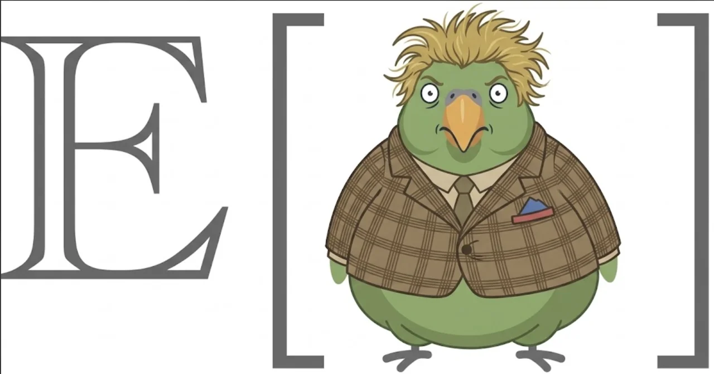 Tommy | Tommy is an agent-facing CLI for preparing realistic sales roleplays with Expected Parrot. It preserves practice attempts and transcript-grounded reviews, produces self-contained coaching reports, and guides coding agents through each state transition with deterministic recommended actions. | Does transcript-grounded feedback improve sales-roleplay skill transfer compared with generic coaching? | Assign learners to feedback conditions, score a second roleplay with a blinded rubric, and compare improvement. |
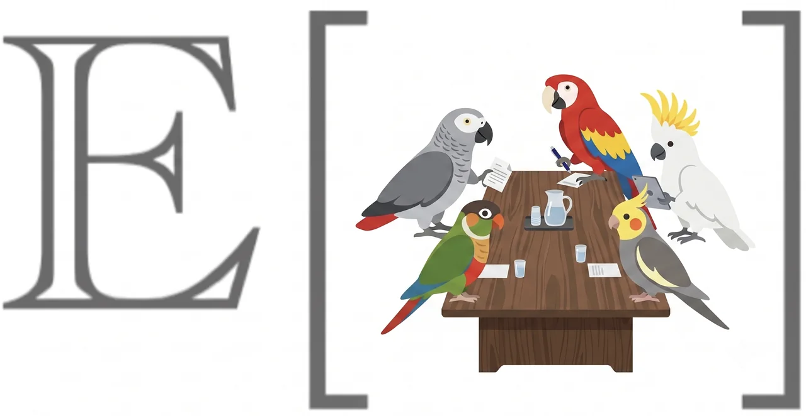 Treffen | Treffen is an agent-first CLI for preparing better meetings. It turns a meeting outcome and participant list into typed EDSL surveys and adaptive interviews, person-specific links and QR codes, evidence-backed synthesis, focused agendas and pre-reads, and durable decision records—while supporting both expected and confirmed attendance. | Do structured pre-meeting surveys improve meeting efficiency, participation, or decision quality? | Compare matched meetings with and without prework; code agenda coverage, speaking balance, and decision follow-through. |
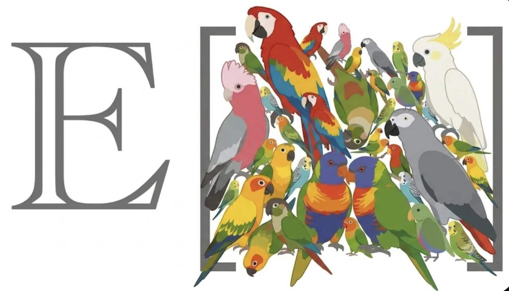 Umriss | Umriss is an agent-facing CLI for constructing auditable digital twins from published survey marginals. It builds candidate personas, calibrates their weights to known population responses, and evaluates the resulting synthetic population against held-out survey items. | How well can synthetic populations calibrated to published marginals predict held-out survey responses? | Calibrate to one public survey's marginals and evaluate untouched items and subgroup-level error. |
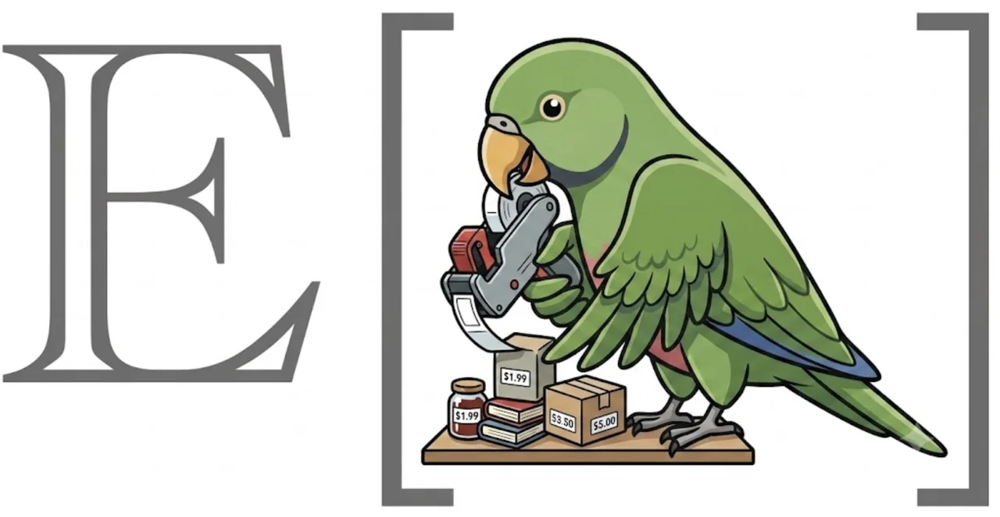 Urteil | Urteil is an agent-first CLI for rubric evaluation, LLM ratings, and auditable scoring. It combines codebooks, manual and fitted scorecards, labeling workflows, gold standards, multi-rater aggregation, quality metrics, and exports. Portable EDSL jobs keep model execution separate, while saved ratings can be rescored locally with a complete audit trail. | When do LLM ratings agree with human raters, and which rubric or aggregation choices improve validity? | Score a public text dataset with humans and models; compare reliability, bias by subgroup, and criterion validity. |
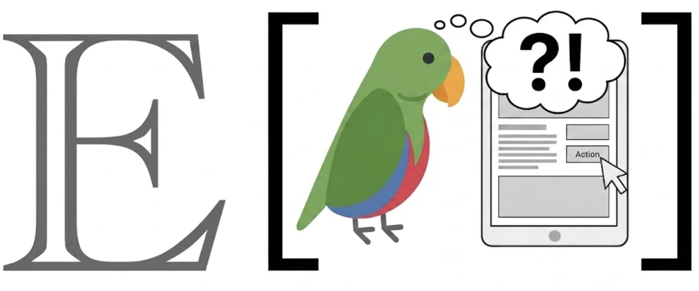 UXTest | UXTest is an agent-first CLI for running synthetic-user UX studies against live web pages. It uses Playwright and EDSL to capture browser journeys, screenshots, traces, and structured findings, preserving an inspectable evidence trail for issue discovery, comparison, and regression testing. | How well do synthetic users find usability problems that human users encounter on the same interface? | Run synthetic and human users through a small website task; compare issue recall, severity, and false positives. |
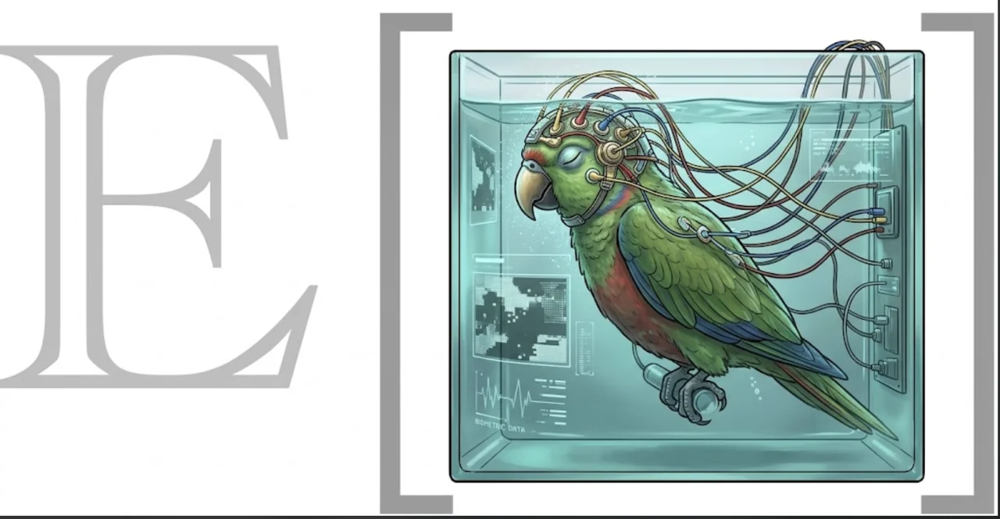 Vorhersage | Vorhersage is a forecasting workbench for agents. It turns binary-event questions into durable research workflows, preserving source provenance, probability judgments, reviews, revisions, and outcomes. It integrates with Epiq, supports optional scenario mixtures and related-question checks, and provides configurable monitoring and matched forecast evaluation. | Do structured evidence reviews and revision logs improve probabilistic forecast calibration over unaided judgments? | Forecast a set of resolvable events, record updates, and compare Brier scores with a baseline forecaster. |
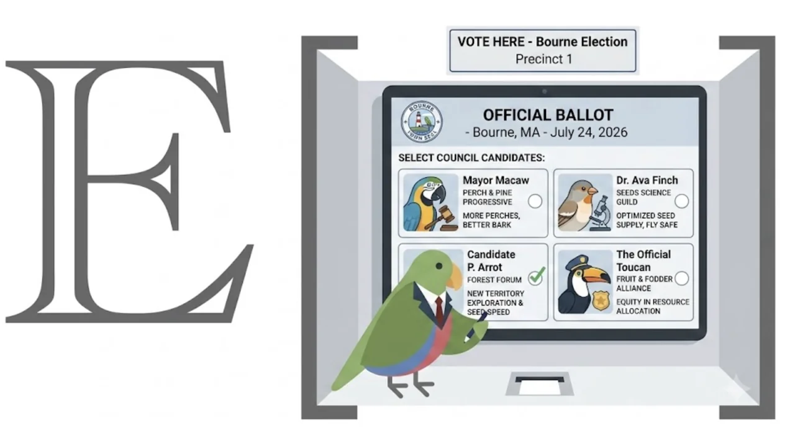 Voting | Voting is a JSON-first toolkit for preference research and group-decision analysis. It collects ballots from people or AI personas and compares single- and multi-winner counting rules across plurality, ranked, approval, score, grade, allocation, and Condorcet method families. | How often do voting rules select different winners, and which rule best reflects voters' stated collective objectives? | Collect ranked, approval, and score ballots for a class decision; compare winners, strategic sensitivity, and criteria chosen in advance. |
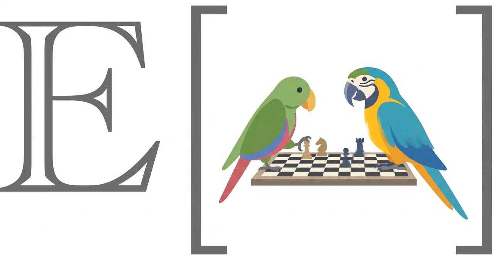 Zermelo | Zermelo is an agent-friendly CLI for ranking large collections through small, overlapping comparisons. It registers entrants and native EDSL AgentList rankers, exports EP jobs for external execution, and fits the returned rankings with Plackett–Luce, Bradley–Terry, or Elo. Calibration, adaptive batching, and sensitivity diagnostics help decide what to compare next while preserving the full study history. | How many pairwise comparisons are needed to recover reliable rankings, and when does adaptive sampling help? | Rank a small set of essays or products under fixed and adaptive comparison budgets; assess held-out ranking accuracy. |
| Zitate | Zitate is an agent-facing CLI for auditing whether academic sources support manuscript claims. It inventories citations, preserves the source material and exact evidence used for each judgment, and produces an auditable report without silently modifying the manuscript or treating metadata and search snippets as substantive support. | How accurately can human and model reviewers detect unsupported or misrepresented citations in manuscripts? | Create a benchmark of claims with verified source passages and test citation-audit judgments against expert labels. |
| Zugunruhe | Zugunruhe is an agent-focused migration CLI for moving Qualtrics and SurveyMonkey instruments to EDSL and Expected Parrot. It provides a staged, machine-readable workflow for capture, conversion, validation, review, and export. | Which survey constructs and logic survive migration between survey platforms, and where do conversions change respondent experience? | Convert a public or consented instrument and compare item semantics, branching behavior, and rendered forms across platforms. |
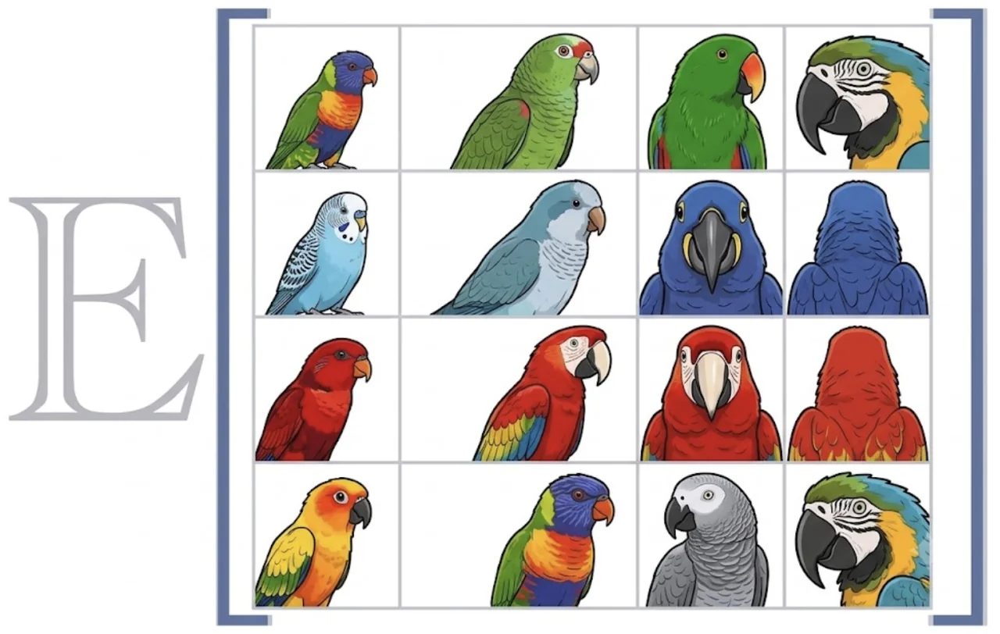 Zwicky | Zwicky is a general morphological-analysis CLI for exploring product and feature design spaces. It defines dimensions and values, generates configurations, applies constraints, and supports AI- and human-assisted evaluation, Pareto analysis, and concept selection. | Does morphological exploration help teams generate more diverse, feasible concepts than unconstrained brainstorming? | Compare concept sets from a structured design-space exercise and a brainstorming control; score novelty and feasibility blindly. |
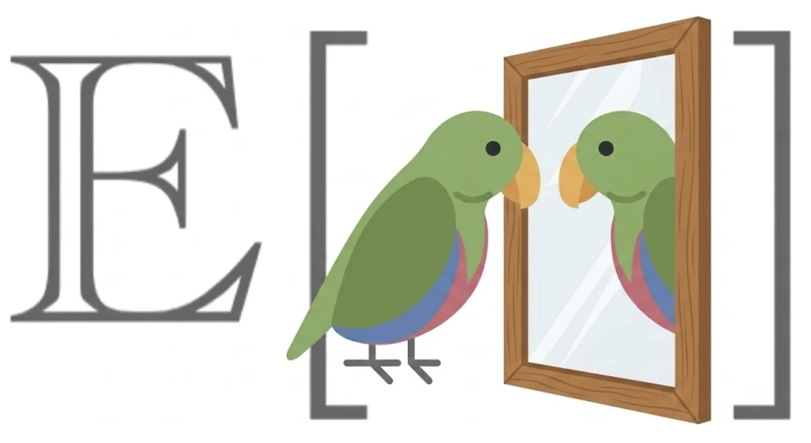 Zwill | Zwill is an open validation harness for survey digital twins. It builds twin prompts and EDSL jobs, records inference artifacts, and evaluates individual- and aggregate-level predictive performance against observed survey responses and conventional baselines. | How much predictive validity do digital twins gain from persona detail, calibration data, and model choice? | Compare twin variants against held-out individual responses and aggregate distributions in a public survey dataset. |